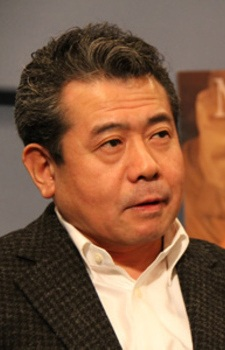

- Blue Exorcist: Kyoto Saga
- Blue Exorcist OVA
|  |
Jin Urayama is a Japanese actor and voice actor. He is affiliated with Production Taiku. He voiced Tonkichi in FLCL Progessive and Dr. W.S. Clark in Francesca.
|
|---|
| |
Tatsuma Suguro |
|
Tatsuma Suguro is Ryuji's father. He is a survivor of the Blue Night. He does not take his job as a priest seriously. He is a very tactiful and prepares himself for the worst situations. He considers people lives much more important than the secrets of the Myoo Dharani. |
Go Back to Main Page |
Go Back to Homepage |
|
|
|
OR |
|